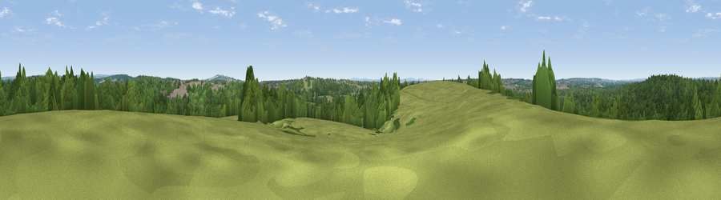

Viewpoint near Knowle
#43482 in England · top 85% of its area beats it · near Knowle · path 84 mWhere it is
The exact computed spot (SU 55125 09525). Click the marker for map links.
Public access: the nearest public right of way is about 84 m away — the final stretch may cross private land. Computed from Natural England's CRoW access layer and OpenStreetMap rights of way — not the legal definitive map. Always verify locally.
The view, rendered

A 360° render of this exact spot computed from the terrain model, tree cover and land cover — summer colours, afternoon light, calibrated against photographs of famous viewpoints. Real trees, hedges and buildings will differ in detail.
The panorama
Grey silhouette: terrain skyline in each direction (720 bearings, Earth curvature and refraction included). Dashed green: skyline with trees (+15 m) and buildings (+8 m) as obstacles. Blue strip: how far the ground is visible on each bearing.
Where the view opens
Wedge length = distance to the farthest visible ground on that bearing (vegetation-aware). Rings at 10, 25 and 50 km.
What fills the view
61% woodland · 29% grassland · 6% built-up · 3% cropland
Angular shares of the visible panorama (visual magnitude), not map area. Landscape diversity 0.42 (0–1 Shannon).
Key numbers
More beautiful places nearby
The staircase of upgrades: each row has a higher view potential than everything closer. Driving times are estimates from straight-line distance, calibrated against real road routing — check an actual route before setting out.
| Place | Direction | Drive | Score |
|---|---|---|---|
| Viewpoint near Knowle | SW · 0 km | ~1 min | 30.9 |
| Crockerhill | ENE · 3 km | ~7 min | 44.2 |
| Viewpoint near Southwick | ESE · 9 km | ~18 min | 74.3 |
| Viewpoint near Southwick | ESE · 10 km | ~19 min | 76.6 |
| Viewpoint near Buriton | ENE · 20 km | ~34 min | 80.0 |
| Beacon Hill | ENE · 27 km | ~43 min | 85.8 |
| Mottistone Down | SSW · 29 km | ~45 min | 87.2 |
| Viewpoint near St. Lawrence | S · 32 km | ~50 min | 88.2 |
50.88259, -1.21777 · source: screening · position refined by local search. Computed location — check access rights before visiting.